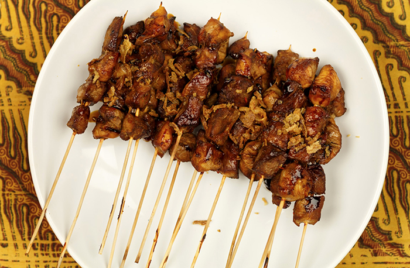

Recipe for Sate/Satay
Go to homepage

Indonesian Sate Recipe: A Delicious Grilled Meat Skewer Marinated in Spices and Served with Peanut Sauce
Sate is a traditional Indonesian dish that consists of skewered and grilled meat, usually chicken, beef, or lamb, marinated in a mixture of spices and served with a peanut sauce. This recipe will serve 4.
Ingredients
- 1 lb of chicken, beef or lamb cut into small cubes
- 1/4 cup of coconut milk
- 2 cloves of garlic, minced
- 1 tsp turmeric powder
- 1 tsp coriander powder
- 1 tsp cumin powder
- 1 tsp salt
- 1 tsp sugar
- Bamboo skewers, soaked in water for 30 minutes
- Peanut sauce for serving
Steps
- In a mixing bowl, mix together the coconut milk, garlic, turmeric, coriander, cumin, salt, and sugar. Add the meat cubes and marinate for at least 2 hours or overnight.
- Thread the marinated meat onto the soaked bamboo skewers, leaving a little space between each piece.
- Grill the skewers over high heat, turning occasionally, until the meat is cooked through, it should take around 10-15 minutes.
- Serve the sate with the peanut sauce on the side.
Sate is a popular dish in Indonesia, and it is often found in street vendors and warung (food stall) around the country, They can be made with different types of meats like chicken, beef, mutton, and even fish. You can also adjust the level of spiciness to your liking by adding or reducing the amount of spices. Peanut sauce is the most popular condiment to serve with sate.